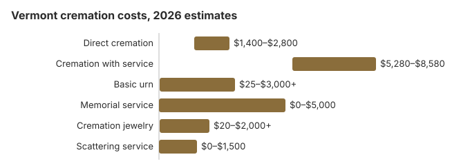

Cremation Costs in Vermont (2026)
Most Vermont families now choose cremation, about 72% by the rate we use, and the real decision is usually how much ceremony to add. Direct cremation runs about $2,000 here and cremation with a full service about $6,600, so the service adds roughly $4,600. Vermont also has its own steps that shape the timing: a 24-hour wait, a medical examiner's certificate and a $25 state permit charge, all covered below.
Two Ways to Arrange a Vermont Cremation
Direct Cremation
- The lowest price a Vermont provider offers
- Nothing is held before the cremation
- The provider takes the body to the crematory
- Ashes come back to the family afterwards
- A gathering can be planned for later
Cremation with Service
- The funeral comes first, then cremation
- Family and friends can view the body
- Held in a church or at the funeral home
- A simple urn is often part of the price
- Close to what people expect of a funeral
What Each Part of a Vermont Cremation Costs
| What it covers | Vermont estimate | Spread |
|---|---|---|
| Direct cremation | $2,000 | $1,400 – $2,800 |
| Cremation with service | $6,600 | $5,280 – $8,580 |
| Basic urn | $50 – $300 | $25 – $3,000+ |
| Memorial service | $500 – $2,000 | $0 – $5,000 |
| Cremation jewelry | $50 – $500 | $20 – $2,000+ |
| Scattering service | $200 – $600 | $0 – $1,500 |
Where these numbers come from: our own Vermont cost model, not a canvass of Vermont crematories, so no provider has to match them. Treat them as a check on the quotes you collect. The details are in our method and in the site disclaimer.
State sources: Vermont Office of Professional Regulation; 26 V.S.A. § 1213; Vermont DCF General Assistance burial rules; 33 V.S.A. § 2301.

Keeping a Vermont Cremation Within Budget
Two practical ways to pay less in Vermont:
- Get three price lists. Ask at least three Vermont providers for their written General Price Lists and compare the direct cremation lines.
- Ask how long it will take. Around Burlington, busy periods can push the wait to 10 to 14 days, and a provider that is cheaper but slower may not suit a family planning a memorial.
Waiting Times at Vermont Crematories
Waits differ a lot from one Vermont provider to the next. Larger crematories around Burlington can often finish a direct cremation in 3 to 5 business days, while a small provider may take up to two weeks. If the date matters, ask each one about its current wait before choosing on price. A direct cremation price near Vermont's $2,000 floor can reflect how busy a provider is as much as what the service costs.
Cremation Resources
- Funeral Consumers AllianceNonprofit advocacy: compare cremation providers
- Cremation Jewelry GuideMemorial keepsakes and remembrance options
- Cremation vs. Burial CostsSide-by-side cost comparison
- Pet Cremation CostsOptions and prices for pet cremation and memorials
- Final Expense InsuranceCoverage options to help pay for cremation costs
Compare Funeral Costs
- Average Funeral Cost in 2026National cost breakdown with real prices
- Cremation vs. Burial Cost ComparisonSide-by-side price comparison to help you decide
- Funeral Cost BreakdownEvery line item explained: know what you're paying for
- Cheapest Funeral OptionsLower-cost alternatives, with typical price ranges
- Direct Cremation: Most Affordable OptionNFDA 2023 median $2,645 with a family-supplied container (latest available)
- How to Compare Funeral PricesStep-by-step guide to getting the best price
What to Know Before Choosing Cremation in Vermont
When considering cremation in Vermont, keep these important points in mind:
- Paying ahead for a Vermont cremation? State law requires the prepaid contract to be in writing and to itemize the services and merchandise; you can move it to another funeral director, in Vermont or elsewhere, for a transfer fee capped at five percent of the principal (26 V.S.A. § 1273; 26 V.S.A. § 1274).
- Skip the casket for a Vermont direct cremation: the FTC Funeral Rule (16 CFR 453.3(b)) entitles you to an unfinished wood box or other alternative container, and Vermont lists cremation alongside earth burial, entombment and natural organic reduction as a lawful permanent disposition (18 V.S.A. § 5319).
- Get answers in writing first from the Vermont provider: the date the ashes will be ready, how they come back to you, and whether a certified copy of the death certificate is in the price. For a prepaid plan, the contract must also say whether it is revocable or irrevocable (26 V.S.A. § 1273).
Frequently Asked Questions
How much does a Vermont cremation cost?
By our estimate, a Vermont cremation costs about $2,000 when it is direct, which covers transport, the cremation and returning the ashes, and about $6,600 with a full service and ceremony.
Which cremation options can a Vermont family choose?
A Vermont family has three usual choices: direct cremation at about $2,000, with no service; cremation followed later by a memorial at a place the family picks, which costs something in between; and a full funeral with viewing before cremation, about $6,600.
What are Vermont's cremation regulations?
In short, Vermont sets a 24-hour minimum before cremation, and the crematory also needs the death certificate, a cremation permit and a signed authorization from the next of kin or designated agent. Vermont has no separate funeral board: the Office of Professional Regulation in Montpelier licenses funeral service with help from appointed advisors, and it handles complaints and discipline. For the exact Vermont citation, the funeral-director question and who takes complaints, see the cremation rules and help section lower on this page.
Can ashes be scattered anywhere in Vermont?
That depends on the place. Ask the landowner before scattering on private property, and check the rules of any park or public land. Plenty of Vermont families choose a columbarium niche or bury the urn instead, and some keep a little of the ashes in a piece of jewelry.
Why do so many Vermont families choose cremation?
At about 72%, cremation is the usual choice in Vermont. Cost explains much of it: by our estimate, direct cremation here is about $6,500 cheaper than a traditional funeral.
How long will a Vermont cremation take?
The cremation itself takes 2 to 3 hours. Direct cremation ($2,000) moves fastest, with no viewing or service to arrange, but Vermont law still requires 24 hours to pass after death (18 V.S.A. 5201), and the provider's own wait comes on top.
Can there be a service before a Vermont cremation?
Yes, and many providers rent a casket for the viewing. Schedule it with the law in mind: Vermont requires a 24-hour wait and a medical examiner's certificate before cremation, though a family may act without a funeral director (18 V.S.A. 5201).
More for Vermont
Vermont's medical examiner certificate and $25 permit charge
In Vermont a cremation cannot go ahead until a medical examiner has certified that no further examination or judicial inquiry is needed, and the body generally must wait at least 24 hours after death (18 V.S.A. § 5201; checked October 29, 2026).
- The state charge: the Vermont Department of Health bills a one-time $25 for the disposition permit printed from its electronic death registration system, however many copies are printed, and payment is due within 30 days of the first printing (Department of Health disposition permit guide, January 2023).
- Who pays it: the invoice prints with the permit, so the funeral home usually pays and passes the charge on; check that it appears on the itemized statement.
Who oversees Vermont cremation, and where to get help
Vermont has no separate funeral board. Crematories, and the funeral homes that sell cremation, are licensed by the Vermont Office of Professional Regulation, which takes questions and complaints at 802-828-1188.
Families need no funeral director under Vermont law (the Funeral Consumers Alliance agrees, leaving Vermont off its nine-state list), yet every funeral establishment and disposition facility, crematories included, must be inspected at least once every two years (26 V.S.A. § 1213), and none will start without the death certificate, the cremation permit and the next of kin's signed authorization.
On timing, the law sets two conditions: a 24-hour wait after death, and a medical examiner's certificate before the cremation, with no requirement that a funeral director be involved (18 V.S.A. 5201).
Help with the cost
Vermont DCF General Assistance can pay up to $1,100 toward a cremation, minus whatever the person who died and their spouse had; money from other relatives does not reduce it. (Source: Vermont DCF General Assistance burial rules; 33 V.S.A. § 2301.) Social Security's one-time $255 goes only to an eligible spouse or child, and must be claimed within two years.
A veteran's ashes can go into a columbarium or in-ground site at no charge for the space. Vermont's one option is Vermont Veterans Memorial Cemetery in Randolph Center (802-828-3379); see cem.va.gov.
What to do next in Vermont
- Check whether the quoted price includes death certificates and the $25 permit charge.
- Leave room for the 24-hour wait and the provider's own turnaround before setting a memorial date.
- When applying to DCF, have the spouse's resources listed, since they reduce the $1,100.
- Report a provider that misstates prices to the Office of Professional Regulation at 802-828-1188.